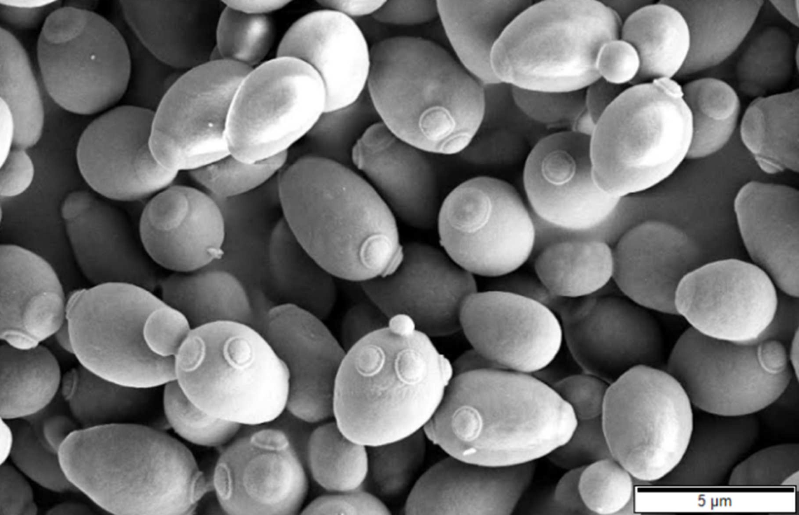

Budding Yeast Cell Cycle Model
Saccharomyces cerevisiae also known as budding yeast is a species of yeast which is single-celled fungus microorganisms. They require a reduced carbon source to fulfill their simple nutritional needs such as acetate since they can not undergo photosynthesis. Yeast also requires a nitrogen source and can use a variety of organic nitrogen compounds to fulfill their need for nitrogen. Additionally, the only other complex compound they need are biotin, at type of vitamin. And they also need a variety of salts and trace elements. Another characteristic of yeast is that they divide by budding rather than by binary fission, and during budding, a small bud emerges from the surface of the parent cell until it is almost as large as the parent cell before break off.

Figure 1: A scanning electron microscope image of Saccharomyces Cerevisiae.
Cell cycle of Saccharomyces Cerevisiae / Budding Yeast
Saccharomyces cerevisiae is also known as budding yeast because of its unusual style of asymmetric division into a large mother cell and a small daughter cell. After G1 period (cell growth), the budding yeast cell initiates a new bud at about the same time that it enters S phase (DNA synthesis). Also, at this time, the yeast cell replicates its spindle pole bodies and begins preparations for mitosis. These simultaneous events of the budding yeast cell cycle are referred to as Start. The bud first emerges from the cell in a burst of polarized growth but quickly switches to isotropic growth, to form an expanding spherical protrusion. Most of the net cell growth after this time goes into the bud. After DNA synthesis is finished, an intranuclear mitotic spindle is built and the replicated chromosomes are aligned at the metaphase plate. Simultaneously, during the G2 (cell growth and preparations for mitosis) and M (mitosis) the nucleus migrates to the neck between the mother and bud compartments in order to orients itself with one pole of the mitotic spindle in the mother cell and the other pole in the bud. During anaphase, the replicated chromosomes are partitioned into two groups: one group is pushed into the mother cell and the other into the bud. The stretched nucleus divides in two, and the cell separates at the bud neck to produce mother and daughter cells. The daughter cell generally has a considerably longer G1 period than the mother cell. It must grow to a certain threshold size before it can initiate a new round of budding, DNA replication, and division.
Major Checkpoints During the Cell Cycle
When yeast cell progresses through the cell cycle, it halts at two major checkpoints:
G1 checkpoint: If DNA damage is detected, mating pheromone is present, or the cell has not reached the critical size, the cell arrests in G1 and is unable to undergo the Start transition which commits the cell to a new round of DNA synthesis and mitosis.
Spindle assembly checkpoint: If DNA damage is detected, DNA is not replicated completely, or chromosomes are not aligned on the metaphase plate, the cell arrests in metaphase and is unable to undergo the Finish transition, whereby sister chromatids are separated and the cell divides.
These checkpoints are enforced by the Cdk/cyclin complexes, a family of protein kinases.
Reference
- “Baker's Yeast and Its Life Cycle.” phys.ksu.edu, 19 August 2005, https://www.phys.ksu.edu/gene/a1.html.
- Tyson J.J., Chen K.C., Novák B. (2013) Cell Cycle, Budding Yeast. In: Dubitzky W., Wolkenhauer O., Cho KH., Yokota H. (eds) Encyclopedia of Systems Biology. Springer, New York, NY. https://doi.org/10.1007/978-1-4419-9863-7_16.
- Laurence Calzone, Kathy Chen, Jason Zwolak and John Tyson. “Budding Yeast Cell Cycle Model." 2004, mpf.biol.vt.edu, http://mpf.biol.vt.edu/research/budding_yeast_model/pp/intro.php.
 webmaster
webmaster